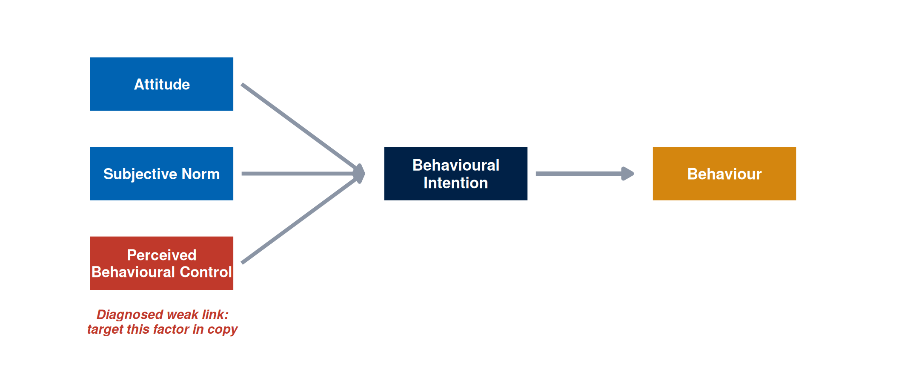
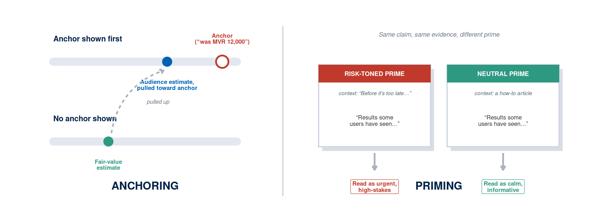
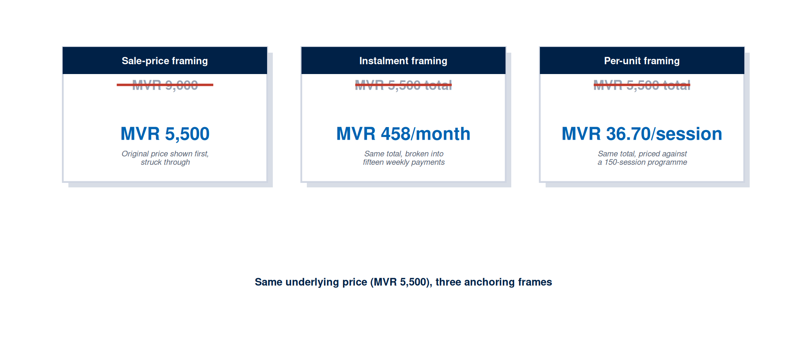
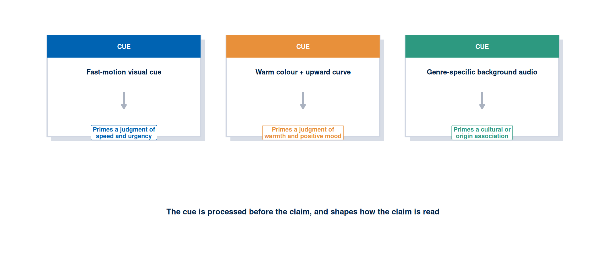
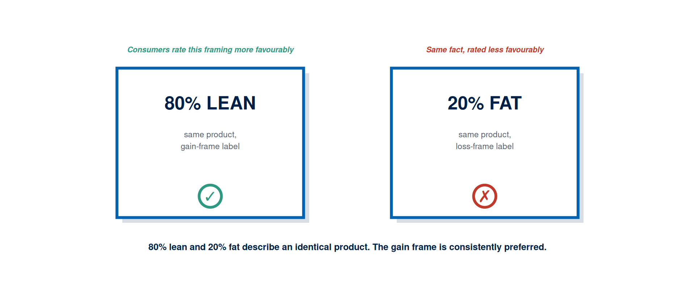
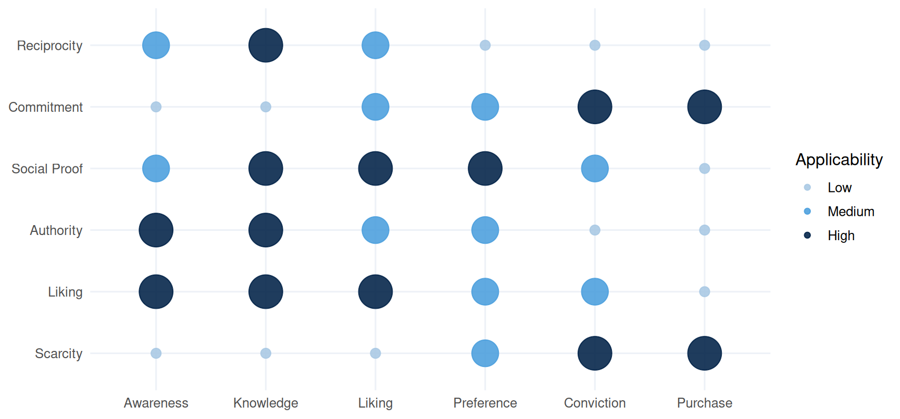
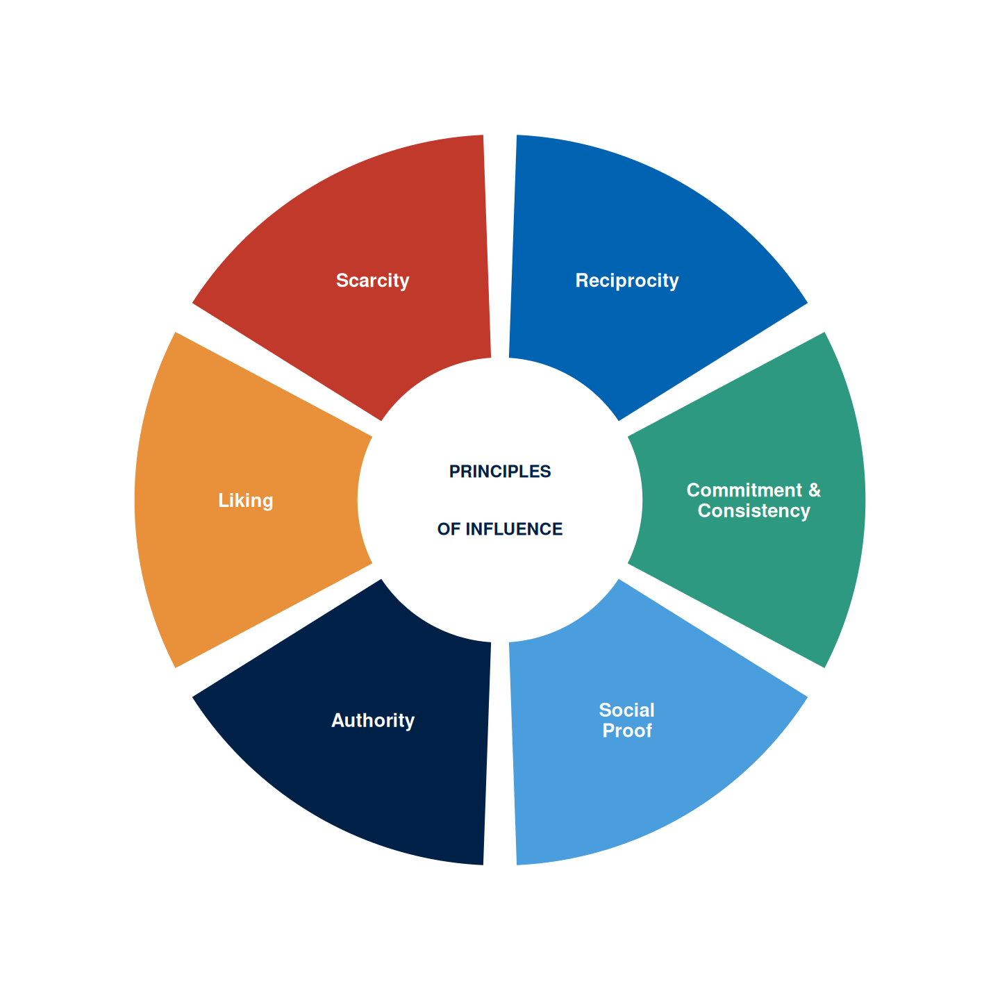
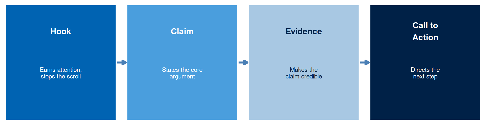
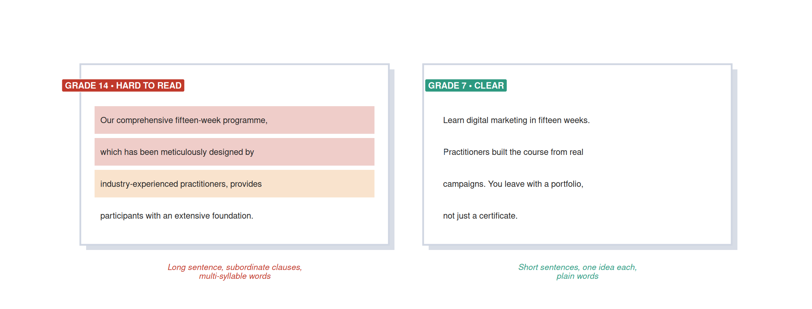

Week 4: Messaging and Wording
NoteOverview
Last week you created the visual layer of your campaign: a documented visual asset set traceable to your positioning canvas. That asset can earn the audience’s first glance, but the words layered over it decide whether the audience stays, because every campaign carries at least one verbal argument: a claim about what the offering does, why it deserves the audience’s attention, and what they should do next. The quality of that argument is a consequence of how well the copy matches the audience’s processing state, the hierarchy of effects stage, and the evidence available to support the claim. Creative talent alone is beside the point. Copy that fails is usually copy written for the wrong audience state, making the wrong claim, in the wrong voice, with the wrong call to action: a structural failure dressed up as bad prose.
This chapter develops the messaging and wording strand of the module. It gives you a theoretical background of how belief structures, processing routes, cognitive shortcuts, and verbal framing shape audience response; a practical vocabulary for evaluating and producing campaign copy; and a set of decision rules for structuring messages, writing headlines, and planning a message test. The artefact you produce this week is a copybook: a structured collection of message variants tied to your campaign’s hierarchy stage and processing route, accompanied by a message test plan. This week’s learning design allocates nine hours: a one-hour lecture, a two-hour tutorial, and six hours of self-directed study.
This Week’s Lecture
Lecture Messaging and Wording
Discussion
1 Introduction
⏱ 10 min
Week overview, copy-as-decision brief, and Week 2 canvas plus Week 3 visual asset handover.
Acquisition
2 Theory and Application
⏱ 30 min
TPB, ELM/HSM processing routes, anchoring, priming, framing theory, Cialdini’s principles, four-part copy structure with tone and readability, headlines, and message testing, each with a theory-to-decision bridge.
Practice
3 Guided Worked Example
⏱ 15 min
Applying the evidence framework to the Villa College Certificate copybook.
Assessment
4 Attendance and Exit Check
⏱ 5 min
Attendance, Moodle concept check.
Learning Objectives
After studying this chapter, you should be able to:
- Apply the theory of planned behaviour to identify which of attitude, subjective norm, or perceived behavioural control is the weakest link in an audience’s path from belief to action, and target that link in copy.
- Distinguish the ELM’s central and peripheral routes from the heuristic-systematic model’s systematic and heuristic processing, and choose copy cues appropriate to each.
- Identify anchoring and priming effects in a campaign context and apply each deliberately to a copy decision, instead of leaving them to chance.
- Apply framing theory to write the same core claim in gain-frame and loss-frame versions and predict which will be more effective for a given audience state.
- Use Cialdini’s six principles of influence to identify the persuasive mechanism most appropriate to the target segment and hierarchy stage.
- Construct a four-part copy structure: hook, claim, evidence, and call to action, evaluated against a tone, readability, and accessibility standard.
- Write a headline that matches the visual hierarchy and the audience’s likely processing route.
- Distinguish a message test from a creative preference test, and design a minimum-viable A/B test for one copy element.
- Evaluate AI-generated copy against the evidence standard: which claims require a documented source and which can be accepted as structural suggestions.
- Apply the evidence framework to copy decisions: classify message choices as evidence-based, inferred, or assumed.
NoteHow to use this chapter
This chapter assumes you have a completed Week 2 canvas and a Week 3 visual asset specification. Every copy decision this week should be traceable back to your target segment, your ELM/HSM processing route, your hierarchy stage, and the visual hierarchy you established in Week 3. Copy that stands apart from those decisions is a caption in search of a campaign. Read the sections below before the lecture and bring both documents to every session: the tutorial task asks you to produce a copybook that stays internally consistent with them.
Why Copy Is a Campaign Decision
Digital marketing copy is a strategic decision in its own right, made alongside the strategy instead of applied to it afterward as decoration. The exact words used to frame a claim can change whether the audience perceives the offer as a gain or a loss, whether they trust the source, whether they process the argument centrally or take a shortcut through a peripheral cue, and whether they act or defer. A campaign team that treats copy as a finishing task, to be written quickly once every real decision has already been made, tends to produce messages that contradict their own strategy: a peripheral-route audience handed a dense argument, or a central-route audience handed a slogan where an argument belongs.
The decisions in this chapter build on the Week 2 canvas. The hierarchy stage determines what kind of claim the copy needs to make: an Awareness-stage audience needs to learn the offering exists, while a Conviction-stage audience needs a final objection resolved. The ELM route determines how the claim should be structured: a central-route audience evaluates arguments, while a peripheral-route audience responds to cues, social proof, and design signals. A message designed for one state and delivered to an audience in the other fails for a structural reason: it was written for the wrong decision context, a deeper problem than any stylistic one (Petty, R. E. and Cacioppo, J. T., 1986; Cialdini, R. B., 2007).
The practical implication is that copy decisions belong after the canvas decisions, and in direct reference to them. This chapter is about finding the most defensible phrasing given what you know about the audience and what the evidence supports; elegance in the abstract is beside the point.
The Theory of Planned Behaviour
The theory of planned behaviour, developed by Ajzen, proposes that a person’s intention to perform a behaviour, and so the behaviour itself, is predicted by three independent factors: their attitude toward the behaviour, the subjective norm they perceive around it, and their perceived behavioural control over performing it (Ajzen, I., 1991). Attitude is the person’s own evaluation of the outcome as good or bad. Subjective norm is the perceived social pressure from people who matter to them, whether that pressure encourages or discourages the action. Perceived behavioural control is the person’s belief about how easy or difficult the action will be, given the resources, time, and obstacles they expect to face.
The model’s practical value for campaign copy sits in diagnosis, beyond mere description: it identifies which of the three factors is the weakest link in a specific audience’s path from belief to action, so the copy can target that link instead of restating the other two. Consider an audience that already holds a favourable attitude toward a programme (they agree it would help their career) and feels comfortable with the social pressure around enrolling, yet believes the schedule clashes with their job: this is a perceived-control problem. Copy that repeats the benefits of the programme addresses a factor that is already resolved. Copy that shows the schedule fits around a working week (a specific class time, a flexible submission window) addresses the actual barrier.
Table 1 shows how the same audience diagnosis changes the copy task.
| Weak Factor | Copy Response |
|---|---|
| Attitude (audience has yet to see the outcome as valuable) | Lead with outcome evidence: a documented result the audience has yet to believe is achievable |
| Subjective norm (audience perceives disapproval or indifference from people who matter to them) | Supply a normative cue: a testimonial or statistic from a person or group the audience identifies with |
| Perceived behavioural control (audience doubts their own ability to act, regardless of attitude or norm) | Remove the specific obstacle in the copy: name the schedule, the cost instalment, or the exact first step, rather than restating the benefit |
TipTheory-to-decision bridge
The theory of planned behaviour states that intention has three independent sources, and a weakness in any one of them can stall the whole path to behaviour. This changes the copy decision: before writing the claim, diagnose which factor is weakest for your audience at their hierarchy stage, and write the evidence element to address that specific factor instead of the one that is easiest to write about.
Processing Routes: ELM and HSM
Your Week 2 canvas already records an ELM processing route: central for an audience that evaluates arguments, peripheral for an audience that responds to cues. A second, closely related account of the same distinction, developed independently by Chaiken, is the heuristic-systematic model. Systematic processing is effortful and analytic: the audience reads the argument, weighs the evidence, and checks it against what they already know. Heuristic processing is fast and rule-based: the audience applies a mental shortcut, such as “experts are usually right” or “a longer list of positive reviews means a better product,” letting the shortcut stand in for evaluating the argument’s content (Chaiken, S., 1980).
The two models describe the same underlying split with different emphases. ELM foregrounds the audience’s motivation and ability to process as the trigger that selects a route. HSM foregrounds the specific heuristics the audience reaches for once they default to the fast path: the source’s credibility, the length of a list, the presence of a familiar name. For copy decisions, the practical difference is where you spend your attention: an ELM-central audience needs a stronger argument, while an HSM-heuristic audience needs a stronger, more recognisable cue, because the copy gets judged by a rule of thumb rather than read line by line.
TipTheory-to-decision bridge
ELM tells you whether to write for argument or for cue. HSM tells you which specific heuristic to supply once you know the audience defaults to cues: a named authority, a visible quantity of social proof, or a familiar source. This changes the copy decision: for a peripheral or heuristic audience, name the specific heuristic your evidence element supplies, rather than defaulting to a generic “trust us” cue.
Anchoring and Priming
Anchoring is the tendency to rely too heavily on the first number or reference point encountered when making a subsequent judgement, even when that reference point is arbitrary or irrelevant to the decision at hand. Priming is the tendency for exposure to one stimulus, such as a word, image, or context, to shape how a person interprets a subsequent, unrelated stimulus. Both effects were documented in the same research programme that produced prospect theory (Tversky, A. and Kahneman, D., 1974).
The copy implication of anchoring is direct: whatever number appears first in a message becomes the reference point against which every later number gets judged. A programme priced with the original fee shown first (“Was MVR 8,000, now MVR 5,500”) makes the discount feel larger than presenting MVR 5,500 alone, because the audience anchors on the higher figure. The same logic extends beyond price: a claim that opens with a large, favourable statistic anchors the audience’s expectation for every claim that follows, so an anchor set too high creates a credibility problem later in the message, once the copy has to live up to it.
The copy implication of priming runs subtler: the words, images, and context surrounding a message shape how the audience reads the claim that follows, ahead of any conscious evaluation. A headline that opens with language associated with risk (“Before it’s too late…”) primes the audience to read the subsequent claim through a risk lens, which can strengthen a loss-frame argument when used deliberately, or make an unrelated claim feel more alarming than the evidence supports when left to chance. Platform context primes in the same way: a claim read immediately after a competitor’s advertisement gets interpreted differently from the same claim read after an unrelated post.

TipTheory-to-decision bridge
Anchoring and priming both operate below conscious evaluation, which means they work regardless of the copywriter’s intent. This changes the copy decision: check every number in your message for its anchoring effect (does the first figure set an expectation the rest of the message can support?), and check the words and images immediately surrounding your claim for an unintended prime (does the context change what the claim implies before the audience reads it?). Used deliberately and disclosed honestly, both effects are legitimate tools. Used to create a false impression, such as anchoring on an inflated “original price” that was never charged, they cross into deceptive practice and fail the evidence standard.
Anchoring and Priming in Real Campaigns
Both effects show up constantly in campaigns you already know. Anchoring drives most price displays: a struck-through original price beside a sale price, a monthly instalment quoted instead of the annual total, or a cost broken down to a per-session or per-serving figure. Each technique presents the identical underlying price through a different first number, and each first number becomes the reference point the audience judges the rest of the offer against. Figure 3 recreates three common anchoring frames applied to the same underlying price.

Priming operates just as often, usually through the context that surrounds a claim rather than through a number. A fast-motion visual cue primes a judgement of speed before a single word of copy is read. A warm colour palette paired with an upward curve primes a positive mood ahead of the claim it introduces. Music associated with a particular culture, playing in the background of a retail environment, primes a cultural association that shapes which product on the shelf gets picked up first. Figure 4 recreates three such cues and the judgement each one primes.

Framing Theory
Framing theory, developed in communication research by Entman and given its empirical foundation by Kahneman and Tversky’s prospect theory, proposes that the same information can produce different responses depending on how it is presented (Entman, R. M., 1993; Kahneman, D. and Tversky, A., 1979). The effect runs far beyond marginal: experiments consistently show that information presented as a potential loss generates stronger motivation to act than the same information presented as a potential gain, because people find avoiding a loss more motivating than achieving an equivalent gain.
The practical implication for campaign copy is that the same offering can be framed two ways. A gain frame presents the positive outcome of taking action: “Earn a verifiable digital marketing credential in fifteen weeks.” A loss frame presents the cost of inaction: “Every week without a digital credential is a week your competitors spend building an advantage.” Both frames describe the same underlying claim; choosing between them is a prediction about the audience’s current state, and personal preference is beside the point. Audiences who are already motivated and evaluating options are often better served by gain frames that help them confirm a direction, while audiences who have yet to register a need may respond better to loss frames that surface a problem they have yet to articulate.
Framing also applies to the structure of the offer itself. A programme described as “twelve weeks, two hours per week” feels different from the same programme described as “twenty-four hours of guided study spread flexibly across three months.” Both descriptions are equally accurate. The question worth asking is which frame reduces the perceived cost of action for the specific audience at the specific hierarchy stage.
TipTheory-to-decision bridge
Framing theory states that the verbal presentation of a claim shapes the audience’s response as much as its content does. This changes the copy decision: before settling on a single version of your central claim, write it in both gain-frame and loss-frame versions. State which frame you are using, why you predict it will be more effective for your audience’s hierarchy stage, and what evidence would confirm or disconfirm that prediction.
A Textbook Framing Example
The clearest demonstration of framing theory in consumer research uses ordinary minced beef. A pack labelled “80% lean” and an identical pack labelled “20% fat” describe the same product, yet the gain-frame label consistently earns a more favourable rating from shoppers than the loss-frame label, purely on the strength of which side of the fact the label states, as Figure 6 recreates.

Cialdini’s Six Principles of Influence
Cialdini identified six principles that describe the psychological mechanisms through which persuasion operates: reciprocity, commitment and consistency, social proof, authority, liking, and scarcity (Cialdini, R. B., 2007). Each principle predicts a different audience response and implies a different copy structure.
“Here is a free template for your content calendar” activates reciprocity: a gift offered before any request. Reciprocity is the underlying tendency to return a favour or gift, and in digital marketing it gets triggered by providing something of genuine value ahead of the ask: a free guide, a diagnostic tool, a template, or a useful insight. The copy implication is that the offer should read as a gift first, over a transaction. Compare “Download our free template to grow your social media following,” which frames the template as a means to the brand’s end instead of a genuine gift.
Commitment and consistency is the tendency to remain consistent with a prior commitment. Once an audience has made a small public or private commitment, they tend to follow through with a larger one. The copy implication is that low-friction micro-commitments (downloading, subscribing, completing a short assessment) can precede larger requests (enrolling, purchasing, contracting). The messaging at the micro-commitment stage should frame acceptance as consistent with the identity the audience already holds, addressing the reader as someone who, for example, takes professional development seriously.
Evidence of others’ choices reduces the perceived risk of making the same choice: that is the copy implication of social proof, the tendency to follow the actions of others, particularly in uncertain situations. Social proof works best when the “others” resemble the target audience: “214 marketing professionals in the Maldives and Southeast Asia who completed this programme” carries more weight than “thousands of customers.” Specific social proof consistently outperforms generic social proof.
Authority is the tendency to follow the guidance of legitimate experts. The copy implication is that credentials, institutional affiliations, publications, and demonstrated expertise reduce the perceived risk of following a recommendation. Authority cues work best when specific and verifiable: “reviewed by an industry-qualified digital marketing practitioner with fifteen years of campaign experience across the Indian Ocean region” carries more weight than “our team of experts.”
Does this brand sound like someone I would want to be? Liking, the tendency to be persuaded by people we like, find attractive, or identify with, turns on exactly that question. In digital marketing, it typically gets activated through shared identity, shared values, or social similarity between the campaign voice and the target audience. The copy implication is that the brand voice should reflect the audience’s self-image, over the organisation’s internal culture.
Scarcity is the tendency to place higher value on resources that are scarce or diminishing. The copy implication is that genuine limits, whether in enrolment capacity, an application deadline, or access to a specific resource, can increase motivation to act. Artificial scarcity (“only 3 left!” when supply runs unlimited) crosses into deception and belongs outside any campaign that holds itself to an evidence standard.
TipTheory-to-decision bridge
Cialdini’s principles describe the psychological mechanisms that make copy more or less persuasive for a specific audience state. This changes the copy decision: identify which one or two principles suit your audience’s hierarchy stage best (social proof and authority at Knowledge, commitment and scarcity at Conviction), then write a copy variant that activates each. Deploy one or two principles rather than all six: a message that activates every principle simultaneously reads as manipulative and undermines trust (Cialdini, R. B., 2007).

Figure 7 maps each principle against the hierarchy stage where it earns its keep. Figure 8 gives the same six principles as a reference wheel: a quick visual index to return to while drafting, rather than a sequence to work through in order.

Copy Structure: Hook, Claim, Evidence, Call to Action
Every effective campaign message, regardless of length or format, has four functional parts: a hook that stops the audience and earns attention, a claim that states what the offering does or why it matters, evidence that makes the claim credible, and a call to action that tells the audience what to do next.
The hook is the most consequential line in any digital asset. Research on email subject lines, digital advertising, and social media posts consistently shows that most audience members who see a message stop reading before the first line ends (Cialdini, R. B., 2007). The hook must earn the audience’s continued attention in the context where they encounter it. In a Facebook Feed advertisement, the hook competes with everything else in the feed. In a Google Search result, it competes with every other result on the page. In an email subject line, it competes with every other email in the inbox.
A strong hook does one of three things: it surfaces a problem the audience already has (“Still getting bookings from just one platform?”), it presents a specific and unexpected claim (“This one canvas takes four hours and replaces a strategy consultant”), or it identifies the audience so precisely that they feel seen (“For marketing officers in Maldivian hospitality who need a credential that travels”). Hooks that stay vague, generic, or self-referential (“Welcome to our newsletter”) earn no attention, because they carry no competitive advantage over anything else in the feed.
The claim follows the hook and states the core argument in one to three sentences. For a central-route audience, the claim should be specific, falsifiable, and linked to evidence. “The only programme in the Maldives that produces a live, open-source analytics portfolio, built from a real client campaign” is a specific claim. “A world-class digital marketing qualification” is a slogan, rather than a claim. For a peripheral-route audience, the claim may lean more on a strong authority cue or social proof signal than on a logical argument. In both cases, the claim should stay consistent with the positioning statement from the Week 2 canvas.
The evidence follows the claim and makes it credible. For a central-route audience, evidence should be specific, verifiable, and directly connected to the claim: a statistic, a testimonial from a named and identifiable person, a case study with documented outcomes, or an institutional certification. For a peripheral-route audience, evidence often takes the form of peripheral cues: a well-known partner logo, a third-party award badge, or a count of satisfied users. The evidence standard from the module applies throughout: evidence needs documentation and citation, rather than invention or assumption.
The call to action tells the audience exactly what to do next. It should match the hierarchy stage: an Awareness-stage call to action asks for a small, low-friction action (“find out more”, “read the story”), while a Purchase-stage call to action asks for a commitment (“enrol”, “book your place”, “start today”). A call to action pitched at the wrong hierarchy stage produces a poor conversion rate, because the action requested exceeds the audience’s current state of readiness, whatever their level of interest.
TipTheory-to-decision bridge
The four-part copy structure provides a decision sequence for every campaign message. This changes the copy decision: identify which of the four parts each sentence belongs to before you write it. A message with a hook and a claim but no evidence risks disbelief. A message with evidence but no call to action informs the audience without directing their next step. Every part earns its place, and each stays consistent with the others.

Ad Copy Template
Table 2 turns the four-part structure into a reusable template. Complete one row of the template for every message variant your copybook requires, and use the “Evidence basis” column to decide, before you write the cell, whether the entry is documentable or still an assumption to test.
| Element | Prompt | Your Entry |
|---|---|---|
| Audience (one line, from Week 2 canvas) | Who is this message for, in one sentence? | Complete this cell, or mark [ASSUMPTION] with a testing method. |
| Hierarchy stage and ELM/HSM route | Which stage, and does the audience evaluate arguments or respond to cues? | Complete this cell, or mark [ASSUMPTION] with a testing method. |
| Hook | One sentence that surfaces a problem, states a specific claim, or identifies the audience precisely | Complete this cell, or mark [ASSUMPTION] with a testing method. |
| Claim | One to three sentences stating what the offering does and what makes it different | Complete this cell, or mark [ASSUMPTION] with a testing method. |
| Evidence | One specific, verifiable proof element: a statistic, testimonial, or certification | Complete this cell, or mark [ASSUMPTION] with a testing method. |
| Call to action | One short sentence matched to the hierarchy stage | Complete this cell, or mark [ASSUMPTION] with a testing method. |
| Cialdini principle (if any) | Which principle, and where in the message it appears | Complete this cell, or mark [ASSUMPTION] with a testing method. |
| Frame used (gain or loss) and why | State the frame and the audience-state prediction behind it | Complete this cell, or mark [ASSUMPTION] with a testing method. |
TipBrainstorming with AI
Once you have completed the audience, stage, and route rows yourself, a prompt such as “Given this audience, hierarchy stage, and processing route, generate three hook options and label which persuasion principle or bias each one leans on” gives you variants to evaluate, over a finished answer to accept. Log the prompt, the output, and which suggestions you kept in your AI prompt log.
Tone, Readability, and Accessibility
The four-part structure governs what a message says. Tone, readability, and accessibility govern whether the audience can receive it at all. A message with a perfectly matched hook, claim, evidence, and call to action still fails if the sentence runs too dense to parse in the three seconds a scrolling audience gives it, or if a screen reader user has no way to tell what the call-to-action button does.
Tone is the voice the copy adopts, and it should match the audience’s self-image established in the canvas, over the organisation’s internal culture. A campaign aimed at working professionals reads as credible in a direct, respectful register and reads as condescending in an over-familiar one (“Hey bestie, ready to level up?”). Tone shifts across a campaign by design: an Awareness-stage hook can carry more energy than a Conviction-stage call to action, which reads best as calm and certain, since urgency at the point of commitment reads as pressure more readily than confidence.
Readability is whether the sentence structure and word choice match the audience’s likely reading context. Digital audiences read mid-scroll, often on a small screen, often in a second or third language. A sentence built from three subordinate clauses is a comprehension barrier in this context, costing the message its audience before the claim lands. Two free tools support this check: paste the copy into the Hemingway Editor for a plain-language grade-level score, and read the copy aloud once, since a sentence that outruns one breath usually runs too long for a scrolling audience.
This standard governs campaign copy read mid-scroll by an audience giving it seconds. The expository prose in this chapter answers to a different reading context, a longer session and a study purpose, and holds itself to the longer, multi-clause sentences that academic register allows.
Accessibility is whether the message serves an audience member using assistive technology or facing a visual, motor, or cognitive constraint. Two checks carry over directly from the Week 3 visual standard: run the same WebAIM contrast check on any text that sits over a background colour or image, and confirm that a call-to-action button’s accessible label describes its function (“Apply for the next intake”) rather than only its visual label (“Click here”), so a screen reader user hears what the button does.
Figure 10 shows the same claim before and after a readability pass: identical content, restructured into shorter sentences and plainer words.

NoteFree Tool: Hemingway Editor
Hemingway Editor (hemingwayapp.com) scores pasted text for reading grade level and flags dense or passive sentences. The web version needs no sign-up. Paste your primary claim and call to action; a grade level above 9 for a general consumer audience signals that shorter sentences or plainer words would serve the message better.
TipTheory-to-decision bridge
Tone, readability, and accessibility form a fifth check applied to every sentence the four-part structure produces. A polish pass reserved for after the structure is finished arrives too late to matter. This changes the copy decision: run the readability and contrast checks on your draft ahead of the message test, because a message that fails either check produces an unfair test result regardless of how well it performs on the other four parts.
Headlines and the First Three Seconds
The headline, or the first line of any message, is the copy decision with the highest leverage. In digital advertising, most impressions end before continued engagement begins. The audience’s decision to continue or stop happens in the first few seconds of exposure, driven mainly by whether the opening line answers the implicit audience question: “Is this for someone like me, in my situation, with my concern?”
A headline performs three functions simultaneously: it identifies the audience, it names the problem or desire, and it promises a resolution. “For digital marketing teams in Maldivian hospitality: a fifteen-week programme that produces a portfolio you can show at your next interview” performs all three. The audience is identified (digital marketing teams in Maldivian hospitality), the desire is named (a portfolio that demonstrates competence), and the resolution is promised (a fifteen-week programme). A generic headline (“Advance your digital marketing career”) performs none of these functions, since it identifies no specific audience, names no specific problem, and promises nothing measurable.
The headline must also adapt to the platform context. A Google Search headline appears to an audience who already typed a query indicating a specific need, so the headline should answer that specific need directly. A Facebook Feed headline appears to an audience who arrived looking for something else entirely, so the headline must create the need before it can address one. These are different copy tasks, and a headline optimised for one context tends to underperform in the other.
Message Testing
A message test is an experiment designed to improve copy decisions by measuring audience response to two or more versions of a message. Creative preference plays no part in it. The question worth asking is which message produces the desired audience behaviour most efficiently at the target hierarchy stage, over which message the campaign team or client prefers.
The minimum viable message test isolates one variable at a time: the headline, the call to action, the framing, or the evidence format. Testing two messages that differ across multiple elements simultaneously produces data that leaves the causal difference ambiguous. A test that changes only the headline, while holding the image, claim, evidence, and call to action constant, produces data about the headline’s contribution to the outcome specifically.
Message testing requires an outcome metric aligned to the hierarchy stage. An Awareness-stage test should measure reach and impression depth (how far into the message the audience read). A Knowledge-stage test should measure click-through to further information. A Preference-stage test should measure engagement with comparison content or time spent with evidence. A Purchase-stage test should measure conversion rate and cost per acquisition.
The sample size required for a statistically reliable result often exceeds what small campaigns can achieve in a reasonable time. In that case, the message test should be documented as a planned experiment with a stated hypothesis, an outcome metric, a minimum sample size, and a decision rule: “If Version A achieves a higher click-through rate at the 95 per cent confidence level over 1,000 impressions per variant, we will adopt Version A as the default message.” A hypothesis paired with a decision rule is an experiment; a hypothesis alone is an interest.
TipTheory-to-decision bridge
Message testing theory states that copy decisions improve when audience response gets measured instead of left to creative judgement. This changes the copy decision: before finalising a message, write the test plan. State the hypothesis, the metric, the sample size, and the decision rule. When the campaign launch precedes the test, label the chosen message version as an assumption and document what evidence would confirm or revise it.
AI Copy Generation: Uses, Limits, and Evidence Standards
AI language tools can produce copy variants rapidly, generate alternative phrasings for A/B testing, simulate an audience’s likely objections, and audit a message for consistency with a brief. Their limits sit in the same place every week: factual accuracy stays unguaranteed, invented evidence reads identically to real evidence, and the strategic judgement that connects a message to a canvas decision remains the student’s responsibility throughout.
The permissible uses in a campaign workbook are:
- generating structural variants (same claim, different framings or call-to-action phrasings) to give the team options to evaluate
- drafting opening lines for review and selection
- checking whether a message stays internally consistent with the brief
- generating a list of audience objections that the message should be tested against
The restricted uses are:
- generating audience facts that lack documentation (“the audience is primarily motivated by status anxiety”)
- generating testimonials or social proof that were never collected from real customers
- inserting specific claims (statistics, guarantees, named outcomes) that lack verification from a cited source
Any AI-generated copy used in the submission belongs in the prompt log with the exact prompt, the output, and the student’s decision about what was accepted, rejected, or revised. A sentence accepted verbatim from AI output counts as an AI-generated claim, and needs a connection to documented evidence or a label as an assumption.
Worked Example: Copybook for the Villa College Certificate Campaign
The Week 2 canvas for the Villa College Certificate in Digital Marketing placed the campaign at the Knowledge-to-Preference transition stage, with a central ELM route. The Week 3 visual asset is a professional, low-colour-complexity design with the portfolio claim as the primary visual element. Together, these decisions carry specific copy requirements forward.
A theory of planned behaviour diagnosis of this audience finds attitude and subjective norm already favourable: working professionals in this segment already believe a credential helps their career, and their peers are enrolling in similar programmes. The weak link is perceived behavioural control, expressed as scepticism that a certificate alone will read as credible evidence in an interview. The evidence element, unlike the hook, carries the job of resolving this specific doubt.
The target audience is highly motivated and evaluates arguments. The hook must identify them precisely and name the problem that the portfolio solves. A candidate hook: “If your next employer asks for campaign evidence, a qualification alone leaves you short.” This is a loss frame: it surfaces the problem (the credential falls short without evidence) ahead of the solution.
The claim follows: “The Villa College Certificate in Digital Marketing is built on fifteen weeks of live campaign evidence. Every student exits with an open-source analytics portfolio, alongside the transcript.” This claim is specific, verifiable, and linked to a point of difference no other locally available programme can match.
The evidence follows: a named graduate testimonial, the institutional accreditation, and one documented metric from a recent cohort (“93 per cent of 2025 graduates cited the portfolio as the decisive factor in their first digital marketing interview”). All three evidence elements need documentation before the campaign launches.
The call to action: “See the programme structure and apply for the next intake.” This action matches the Knowledge-to-Preference stage: the audience stands ready to investigate in depth, ahead of committing outright. A “Book now” call to action would suit a later stage than this audience has reached.
The message test plan: test the gain-frame alternative (“Exit the programme with a live analytics portfolio that proves your campaign skills to any employer”) against the loss-frame original. Metric: click-through rate from the landing page to the programme structure page. Sample: 500 impressions per variant. Decision rule: adopt the higher click-through version if the result achieves 95 per cent confidence.
Two More Worked Examples
The certificate campaign above is one category among many, and the same sequence, canvas decisions, TPB diagnosis, frame, four-part structure, applies just as directly to a sports event or a hospitality business. The two condensed examples below walk through a community marathon and a guesthouse, so the framework reads as general-purpose rather than tied to one type of offering.
NoteWorked example: a community marathon
Stage and route: Awareness, peripheral/heuristic. Most of the audience has yet to consider entering a race at all, and a scrolling audience responds to cues over arguments at this stage.
TPB weak link: attitude. The audience half-believes a marathon is for “real runners” alone, a category that excludes someone starting from zero.
Hook (loss frame): “Every year you say next year, and next year keeps not showing up.”
Claim: “The Malé City Half Marathon’s ten-week Couch-to-Start plan takes any beginner to the finish line, with a pace group for every level.”
Evidence: last year’s beginner finisher count, and a named first-time finisher’s testimonial (“I had never run further than the bus stop before this”).
Call to action: “See the beginner training plan,” matched to the Awareness stage, rather than “Register now.”
Cialdini principles: social proof (the finisher count) and a low-friction commitment device (signing up for the free plan ahead of race registration).
NoteWorked example: a guesthouse in a hospitality market crowded with resorts
Stage and route: Preference, central. The audience is actively comparing named alternatives and reading the specifics.
TPB weak link: attitude. The audience assumes a guesthouse experience falls short of a resort experience, regardless of price.
Hook (gain frame): “Your reef is twenty metres from your bed. Theirs is a forty-minute speedboat ride.” Gain frame, because this audience is already evaluating options and needs a reason to prefer this one.
Claim: “This is the only guesthouse on the atoll with direct house-reef snorkelling access, priced at a third of the nearest resort.”
Evidence: a verified review count and score, alongside a named guest quote citing the reef access specifically.
Call to action: “Compare our rooms and rates,” matched to the Preference stage, rather than a Purchase-stage “Book now.”
Cialdini principles: authority (the verified review count) and specific social proof (the named quote), since this audience trusts other travellers’ documented experience over the guesthouse’s own claims about itself.
Table 3 lines up all three examples so you can see how the same decision sequence produces three different messages once the stage, route, and TPB diagnosis change.
| Decision | Certificate Programme | Community Marathon | Guesthouse |
|---|---|---|---|
| Hierarchy stage / route | Knowledge-to-Preference / central | Awareness / peripheral | Preference / central |
| TPB weak link | Perceived behavioural control | Attitude | Attitude |
| Frame | Loss | Loss | Gain |
| Call to action | See the programme structure | See the beginner training plan | Compare rooms and rates |
| Cialdini principle | Authority, named evidence | Social proof, commitment | Authority, social proof |
Applying the Evidence Framework to Copy Decisions
Copy decisions are claims about the audience, the claim’s credibility, and the expected response. The evidence framework applies to each element.
A claim derived from documented audience research, customer feedback, or public signals is evidence-based. A claim derived from a reasonable interpretation of documented evidence is an inference. A claim that represents an untested belief about the audience is an assumption.
The most common copy failure in campaign workbooks presents assumptions as evidence. The message “our audience values flexibility above all else” is an assumption unless traceable to a documented source: a survey result, a pattern in public reviews, a social listening finding, or a statement in a focus group record. AI-generated audience characterisations (“this audience tends to be ambitious, time-pressed, and sceptical of traditional qualifications”) remain assumptions until each element connects to a documented source.
Table 4 shows how the evidence framework applies to the five core copy decisions in the weekly artefact.
| Copy Decision | Evidence basis | Assumption (if no evidence) |
|---|---|---|
| Hook and opening line | Documented audience language from public reviews, forums, search queries, or social listening | Hook selected on copywriter’s judgement about audience concern, with no audience language documented |
| Core claim | Positioning statement from Week 2 canvas; documented point of difference | Claim derived from internal belief about offering superiority, disconnected from any competitive audit |
| Evidence element | Verified statistic, named testimonial, or institutional accreditation with citation | Evidence element invented or taken from AI output without verification |
| Call to action | Hierarchy of effects stage from Week 2 canvas; documented conversion rate benchmark if available | Call to action selected from preference, mismatched against the documented hierarchy stage |
| Framing choice (gain or loss) | Documented audience state: early-stage awareness suggests loss frame; evaluating-options stage suggests gain frame | Framing selected on aesthetic or intuitive grounds, absent any audience state evidence |